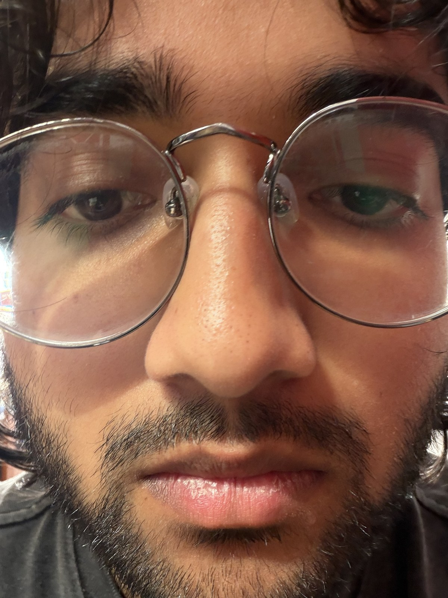
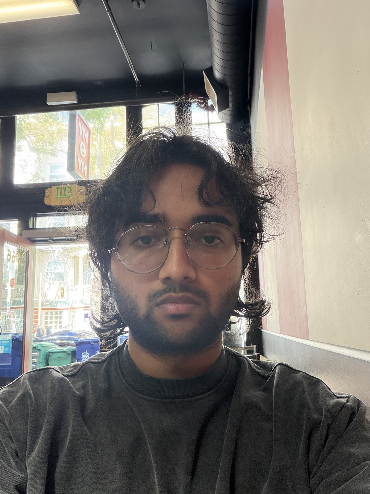
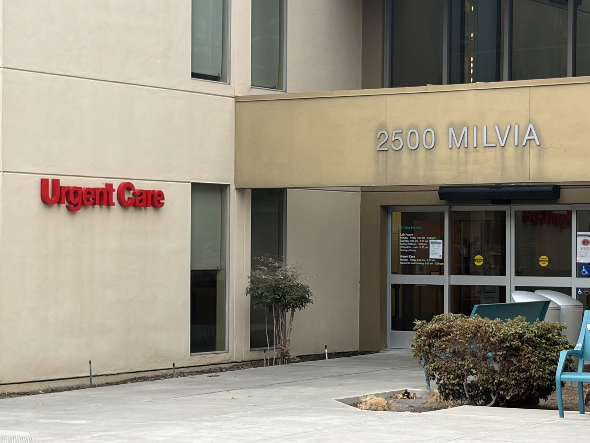
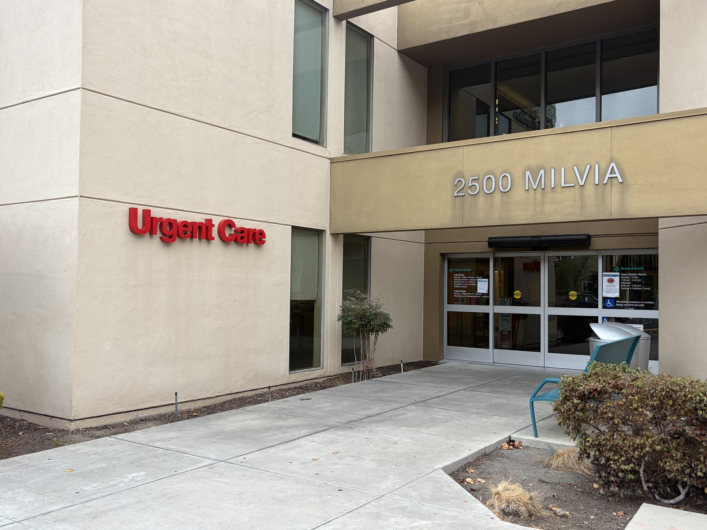
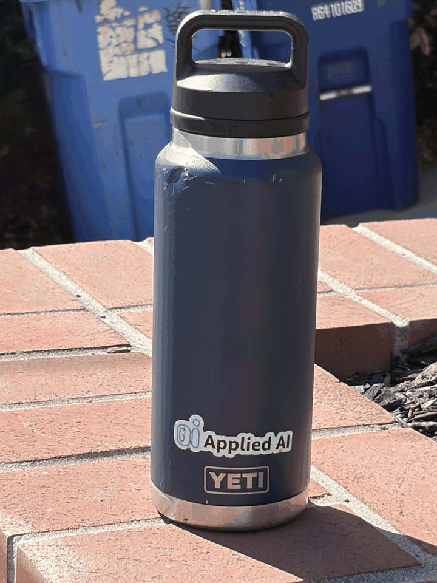

Project 00 · Fall 2026
Becoming Friends
with Your Camera
An exploration of perspective, focal length, compression, and the dolly zoom.
Selfie: The Wrong Way
vs. The Right Way
At very close range, perspective exaggerates the depth of the face: the nose and glasses dominate while the sides recede. Stepping back produces more balanced facial proportions and a less distorted portrait, showing that camera position—not zoom alone—sets perspective.


Architectural
Perspective Compression
From farther away with a longer zoom, the building's facade appears flatter and its layers feel closer together. Moving toward the building and widening the view strengthens converging lines and foreground depth, even when the building remains approximately the same size in frame.


The Dolly Zoom
Across six exposures, I moved the camera backward while increasing zoom to keep the bottle roughly the same size. The subject stays visually anchored while the bins, brick lines, and building shift in scale, creating the classic Vertigo effect.
